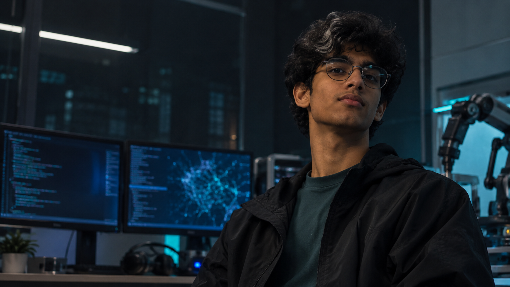

01 — AI SYSTEMS
ORBIT
A personal agent framework that turns multi-step workflows into auditable, tool-using systems. Built around reliability, not magic demos.
LLM orchestrationPythonEvaluation
I'm Soham Shetty — product-minded engineer, AI tinkerer and founder of a few ideas that refused to stay as ideas. I work where intelligent software meets the messy real world.

A small selection from the lab. Each project starts with a real problem, then gets aggressively prototyped.
A personal agent framework that turns multi-step workflows into auditable, tool-using systems. Built around reliability, not magic demos.
A fictional geospatial intelligence platform that combines satellite imagery and local data to surface early environmental risk signals.
A modular robotics sandbox for testing perception and navigation ideas before they leave the simulator.
I like taking complicated systems apart, understanding why they behave the way they do, and rebuilding them so they are more useful. My interests sit across machine learning, human-computer interaction, robotics and the business of getting good technology into people's hands.
I am happiest moving between a research paper, a messy prototype and a whiteboard full of product questions. I value clear thinking, good engineering and shipping something people can actually use.
Not a badge collection. Just the tools that help turn a rough idea into a working system.
PyTorch · scikit-learn · Transformers · vector search · model evaluation
Python · TypeScript · React · FastAPI · PostgreSQL · Docker · cloud deployment
ROS 2 · computer vision · multimodal systems · edge inference · rapid prototyping
Exploring agent reliability, evaluation and useful automation.
Prototyping applied ML tools and learning what survives contact with users.
Small apps, ambitious side projects and a growing interest in intelligent systems.
To Soham Shetty OG: respect for being the original. I have simply arrived with a suspiciously large repository and a better terminal theme. No rivalry necessary. Probably.